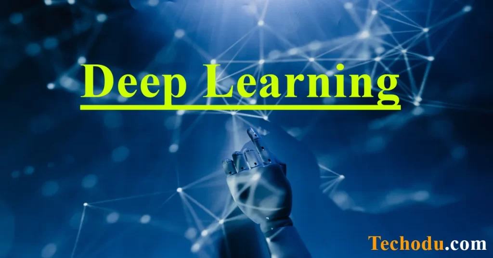

| Serial No |
photo |
Link |
Description |
| 1 |
|
What is cyber security? |
must always be aware of the challenge of how to protect information. Cyber security is one of the threats to maintaining the reliability of the information. |
| 2 |
 |
What is Deep Learning? |
Deep Learning (DL) is a subfield of Machine Learning (ML) that uses algorithms similar to how neurons are used in the human brain. DL creates artificial neural networks and layers based on how the human brain works. Deep learning is a machine learning technique that teaches computers what we humans do easily and naturally – learn from the examples we encounter. |
| 3 |
|
Attention Zero Trust Security |
Programming involves tasks such as analysis, generating algorithms, profiling algorithms' accuracy and resource consumption, and the implementation of algorithms (usually in a chosen programming language, commonly referred to as coding). |
| 4 |
|
What is cyber security? |
we must always be aware of the challenge of how to protect information. Cyber security is one of the threats to maintaining the reliability of the information. |
| 5 |
 |
Cloud Computing For Beginners? |
Cloud computing is the provision of computing services (including servers, storage, databases, networking, software, analytics, and intelligence) – providing rapid innovation, elastic resources, and economies of scale over the Internet (the cloud). |
| 6 |
|
Which Branch of Military is Best for Cyber Security |
Which Branch of Military is Best for Cyber Security: There are several different branches in the military and each has its own benefits and drawbacks. But when it comes to cyber security, which branch is best? Let’s break it down by analyzing the pros and cons of each branch. |
| 7 |
|
How to Measure Everything in Cyber Security |
It’s impossible to know what you don’t know—but it’s also necessary to keep an eye on your company’s biggest vulnerabilities and exposures, even when you don’t know what they are. Here’s how to measure everything in cyber security, so you know exactly where your weaknesses are, what they mean to your organization, and how to fix them.
|
| 8 |
|
Information security 3 elements |
must always be aware of how information assets are safe to handle. In particular, it is important that the information held by a company is prevented from being damaged or lost and can be used whenever necessary. |
| 9 |
|
Which Laptop is Best for Cyber Security Students |
When trying to decide which laptop to buy, there are quite a few options to consider. For cyber security students, one of the main considerations is whether or not the laptop has enough memory to run the required virtual machines and software (e.g., Kali Linux). |
| 10 |
|
What is Topology? Explain with details. |
In mathematics, topology (English: Topology) can also be written as topology, or paraphrased as phase geometry. changing nature. In the topology, the important topological properties include connectivity and compactness. |
|
Name: Hilal Ahmad
|